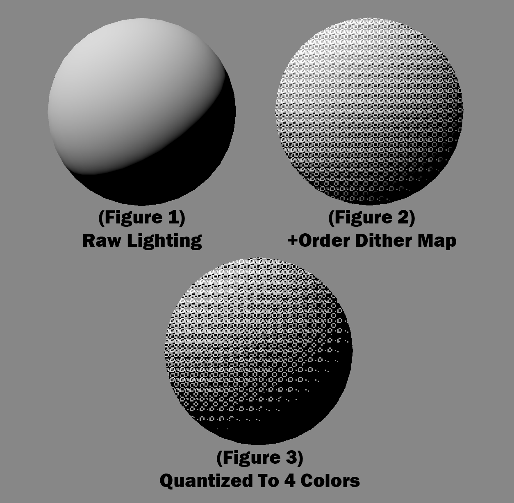

In technical terms, this is a subset of dithering, as it is actually creating the appearance of more colors with less.
The is done by mixing a texture, called a ordered dithering map, into the image which pushes the existing colors up or down. (Figure 1)
Then the colors of the image are quantized down to a lower number. (Figure 2)
And the ordered dithering map makes it so a appearance of the original colors are kept, as the original colors where pushed from their original values.
This can also be thought of as the ordered dithering map controlling the order pixels transition to the next closest color.
This example is quantized to a total of 4 colors.